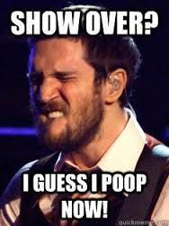
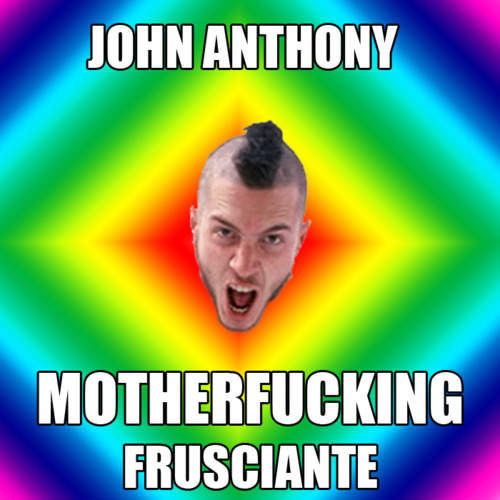
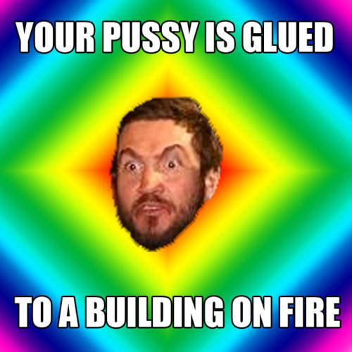
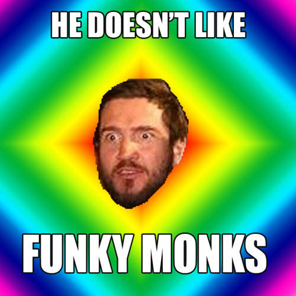
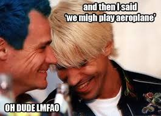
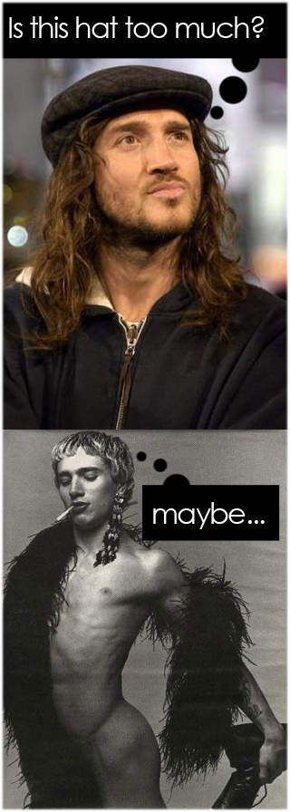
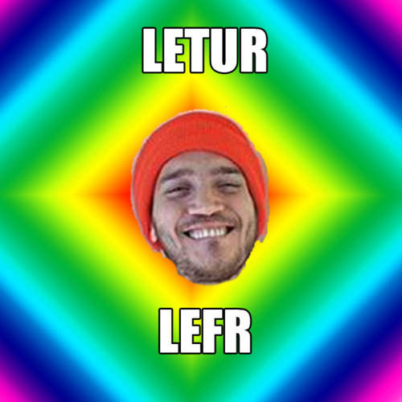
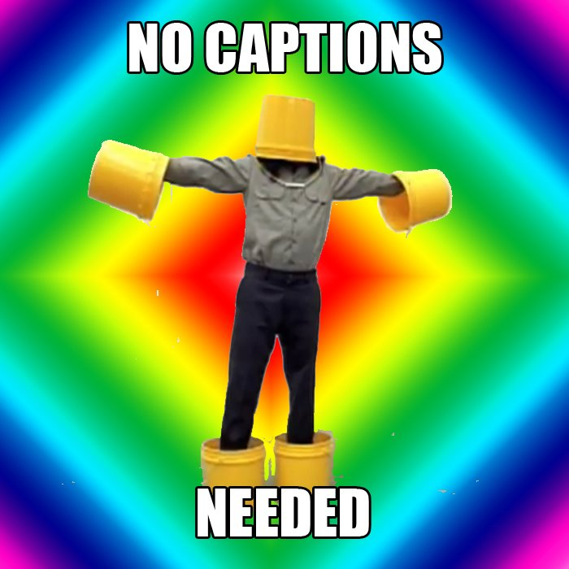
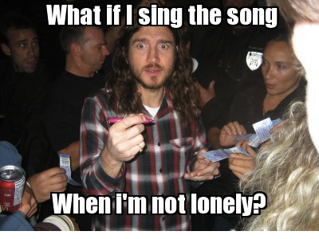

Dlaczego John Frusciante jest idealnym bohaterem internetowych memów? Choćby dlatego, że ma na całym świecie tysiące oddanych fanów, którzy idąc z duchem czasów komentują jego życie, twórczość i wypowiedzi za pomocą memowych przekazów.
Czym jest mem? Ciężko przytoczyć precyzyjną definicję tego zjawiska, przyjęło się, że mem internetowy to dowolna, chwytliwa porcja informacji, która może przybierać różne formy – głównie obrazków lub zdjęć uzupełnionych krótkim tekstem. Socjolodzy porównują memy do genów – mnożących się przez replikację, ale często podlegającym też mutacjom. Memy, podobnie jak geny, kryją też w sobie skondensowaną dawkę informacji – tyle że o pewnym zjawisku kulturowym, a nie o żywym organizmie. Ich rozprzestrzenianiu sprzyja sieciowa struktura Internetu, a niektóre, najbardziej chwytliwe, doczekują się olbrzymiej popularności i dziesiątek, jeśli nie setek modyfikacji. W końcu co internauta, to pomysł.
Tworzenie memów może być zarówno wyrazem sympatii, jak i antypatii. Ale nas interesuje ten pierwszy przypadek. Odkąd pojawiło się zjawisko memów fani wyrażają za ich pomocą swoje uwielbienie dla artystów. Dziwne miny, stroje, kontrowersyjne wypowiedzi, sceniczne wpadki, „złote myśli” z wywiadów, a czasem po prostu piękne zdjęcia – wszystko to daje impuls do powstawania kolejnych fal memów przepływających przez Internet.
I was talking to my cats for three hours
John Frusciante również doczekał się wielu memowych opisów. Ekspresyjna mimika i szaleństwa na scenie, ekscentryczne zachowania, opowieści o duchach, rozmowach z kotami, artystyczna nieprzewidywalność, skłonność do wygłaszania skomplikowanych filozoficznych teorii – wszystko to stanowi idealną bazę dla kolejnych mikrokomunikatów. John portretowany jest w nich zazwyczaj jako ekscentryczny artysta, choć zdążają się często i takie, które po prostu oddają hołd jego muzycznemu talentowi. Można powiedzieć, że osobną kategorię stanowią memy o kotach Johna – ale koty w ogóle stanowią odrębną (nota bene najpopularniejszą ilościowo) kategorię bohaterów memów, więc wygrywa statystyka nakręcana przez takich słodziaków jak Zrzędliwy Kot.
Josh gimme my job back
Bardzo często w memach o Johnie pojawiają się dwa tematy: odejście z Red Hot Chili Peppers oraz zajęcie się muzyką elektroniczną. Takie są fakty – jak mawia Kamil Durczok, ale tysiące fanów szuka nadal odpowiedzi :dlaczego? I tu otwiera się pole do popisu i do dociekań oraz mniej lub bardziej dowcipnych komentarzy. John bowiem w swoich życiowych decyzjach często przypomina popularnego bohatera wielu memów – hipstera, który z definicji odrzuca wszystko co zbyt cool, zbyt masowe, zbyt MTV, zbyt Rock And Roll Hall Of Fame. Idzie pod prąd do tego stopnia, że czasem staje się to śmieszne. Ucieczka od sławy i mainstreamu została po wielokroć zapisana w memach o Johnie, podobnie jak jego czasem skomplikowane relacje z pozostałymi członkami Red Hot Chili Peppers – zwłaszcza z Anthonym Kiedisem.
Memy podobnie jak każdy wytwór kultury mogą mieć większą lub mniejszą wartość. Jeśli trzymamy się założenia, że są formą zapisu informacji, to kto wie czy za kilkaset lat archeolodzy Internetu nie będą z nich odczytywać smutnej czasami prawdy o naszych czasach. Dlatego apelujemy – zanim zrobisz mema pomyśl dwa razy, niech bawi, zadziwia, ale niech niesie w sobie jakąś ciekawą treść.
A teraz zapraszamy do lektury „deszyfrującej” 10 memów o Johnie Frusciante wybranych specjalnie dla Was i skomentowanych przez Patryka Dobrzyńskiego, zwycięzcę naszego niedawnego memowego konkursu.
10. Podczas wszystkich koncertów możemy zauważyć jak emocje Johna malują się na jego twarzy i towarzyszą mu przy grze. Ale czy ktoś pomyślał dlaczego tak naprawdę robi takie miny?

źródło:
www.encrypted-tbn0.gstatic.com
9. Znany, krótki i trafny opis Johna przez Flea, tuż po tym jak Fru wykonał utwór „Maybe” zespołu The Chantels, na żywo podczas legendarnego koncertu w Slane Castle. Nic dodać, nic ująć.

źródło:
http://frusciantememes.tumblr.com/
8. Piosenka może i jest spokojna, ale gdybym był kobietą, bałbym się spotkać John’a w nocy z takim wyrazem twarzy. Pochodzi z debiutanckiej płyty Fru zatytułowanej „Niandra Lades and Usually Just a T-Shirt”. Mam nadzieje, że pisząc ten utwór nie sugerował się prawdziwymi historiami.

źródło:
http://frusciantememes.tumblr.com/
7. W pewnym wywiadzie z Anthonym i Johnem, holenderski dziennikarz przyznał się, że nie lubi kawałka „Funky Monks”. Oburzenie Johna i jego reakcja była prawie że natychmiastowa: „You don’t like fucking bassline in the end of the song? The outro? BADOBOBOM PARAMBAMBAM PARAMBAMBAM!” Tak chyba brzmi ten bas, czyż nie?

źródło:
http://frusciantememes.tumblr.com/
6. W wywiadzie, który odbywał się podczas trasy promującej „Stadium Arcadium”, wszyscy członkowie Red Hot Chili Peppers mieli odpowiedzieć na pytanie „Jaka jest aktualnie Twoja ulubiona piosenka?”. Kiedy Flea powiedział „Aeroplane” widać było, że John planuje połamać Michaelowi palce i spalić bas za przypominanie mu o „One Hot Minute”. Pozdrawiam Dave’a Navarro.

źródło:
http://chiliper.wordpress.com/category/memes/
5. Emmmm.. A według mnie kapelusz bardzo stylowy….

źródło:
http://chiliper.wordpress.com/category/memes/
4. Czy tylko ja uważam, że podobna mina i psychodeliczne kolory, które przypominają świat po dobrych narkotykach, towarzyszyły Frusciant’emu przez cały czas podczas nagrywania „Letur Lefr”? Patrzcie na te zdjęcie przez 10 minut, a potem idźcie nagrać coś ze swoimi kotami.

źródło:
http://frusciantememes.tumblr.com/
No to zaczynamy podium!
3. To tylko fragment tego, cóż, wytworu ciekawej wizji reżysera, który nakręcił chłopakom „Can’t stop”. Odkąd zobaczyłem ten teledysk mój mózg wciąż zastanawia się: o co tu właściwie chodzi? Szkoda, że John nigdy nie zdecydował się na taki strój sceniczny. Taki Buckethead, tylko że z pięcioma wiadrami.

źródło:
http://frusciantememes.tumblr.com/
2. Ktoś kojarzy co to za piosenka? Tak, to „Under the bridge”, ale w wersji nieco wokalnie podrasowanej przez Johna. Oczywiście zagrana przez Papryczki w 1992, w „Saturday Night Life.
Załączam tekst, w razie gdyby ktoś chciał spróbować swoich sił na najbliższym karaoke:
„WOOOOOOOOO
Is where I drew some blood
…………………..
I could not get enough
WOLOLOLOLOU
Forgot about my love
WOUOUOUOUU
I gave my life away”
1. W końcu, złoty medal w konkursie memów otrzymuje ten wytwór. Bardzo mnie urzekł, wyobraziłem sobie, że John faktycznie rozdaje autografy i nagle zatrzymuje się i myśli „Co jeśli..”. Jest to oczywiście odwołanie do piosenki Johna „Song To Sing When I’m Lonely” z albumu „Shadows Collide With People”. Jak myślicie czy można zaśpiewać tą piosenkę, gdy nie jest się samotnym? Ja myślę, że to wbrew prawu – jak używaniu żelu pod prysznic w wannie czy jedzenie płatków śniadaniowych na kolację.

Autorzy: Wanda Modzelewska, Patryk Dobrzyński